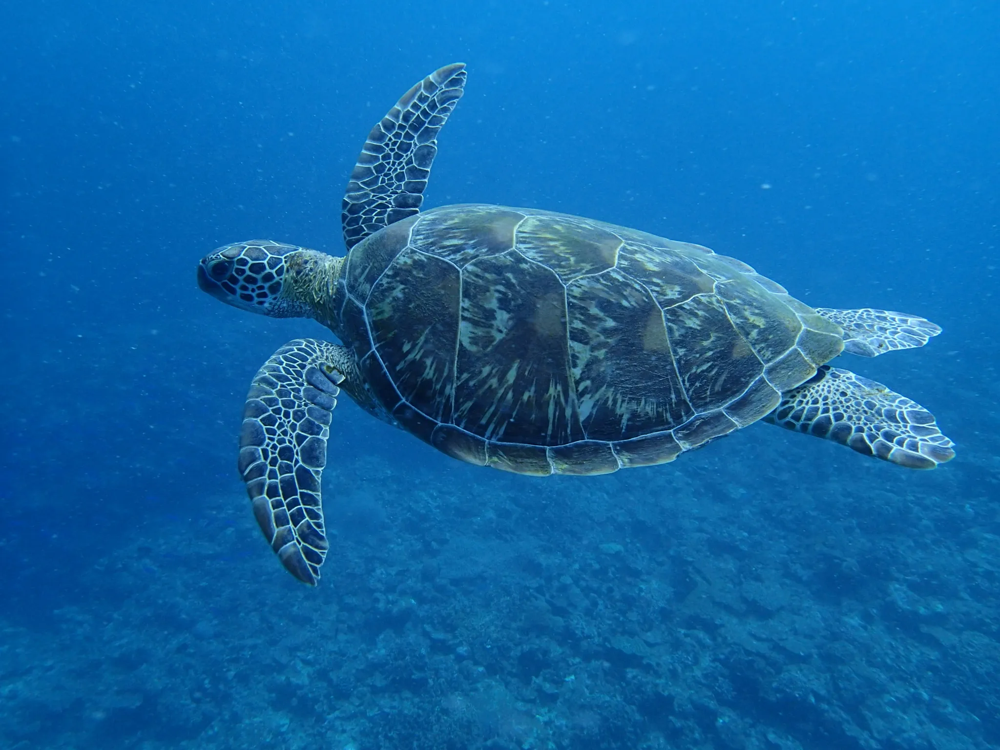
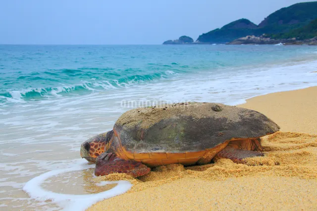

動物の説明
カメは「Testudines（カメ目）」に属する爬虫類であり、背面と腹側が「甲羅（shell）」と呼ばれる殻で覆われている、きわめて独特な身体構造を持つ動物です。
全世界に数多くの種類が存在し、海に生息する海亀、淡水にすむ種類、さらには陸地で生活するリクガメなど、生息環境は非常に多様です。
カメの甲羅は単に“背負っている殻”ではなく、肋骨や背骨が進化して形成されたものでございます。そのため甲羅は身体の一部であり、脱いだり取り替えたりすることはできない構造となっています。

古い生き物
かめ
カメ（カメ目）は地球上に非常に長い歴史を持つ生き物でございます。化石記録から見ても、その起源は古く、多くの環境変化や絶滅の危機を乗り越えて現在まで生き残ってきた“強い生命力を持つ爬虫類”といえます。

甲羅の秘密
甲羅
カメの甲羅は、外敵から身を守るために進化してきたものと考えられております。カメは走る速度が速くないため、逃げるよりも「硬い殻で身を守る」という方法を選んだとされています。
また、甲羅が骨格とつながった身体の一部であるため、脱皮のように“脱ぐ”ことはできません。そのため、成長に合わせて骨と皮膚が一体となって大きくなるという、非常に特殊な構造を備えています。